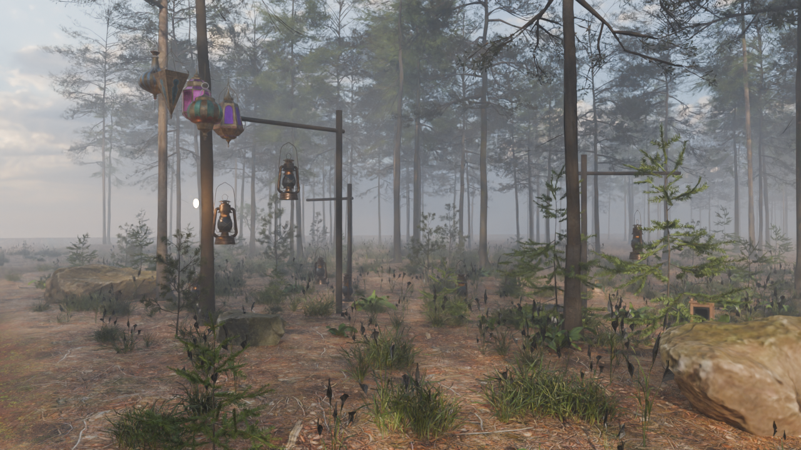
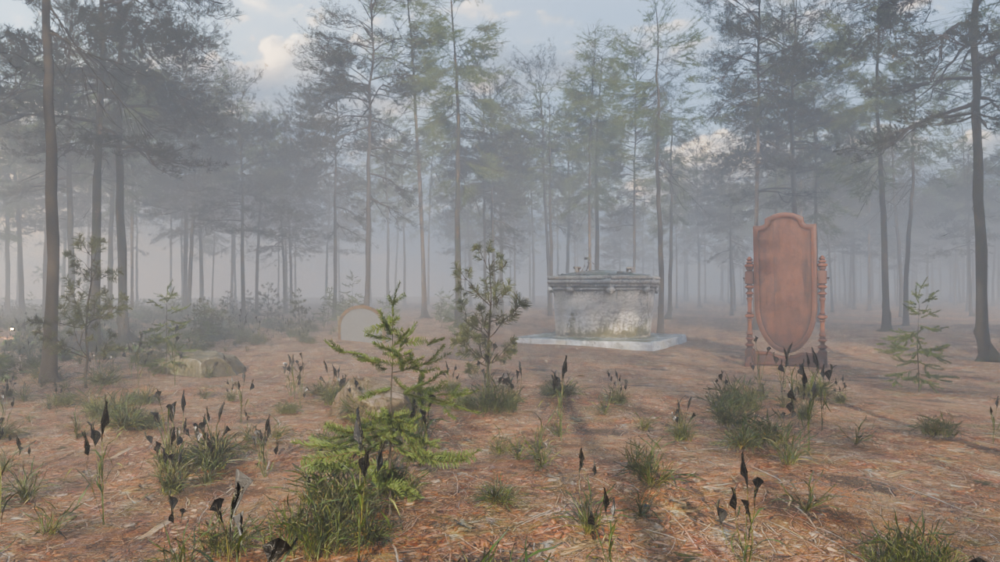
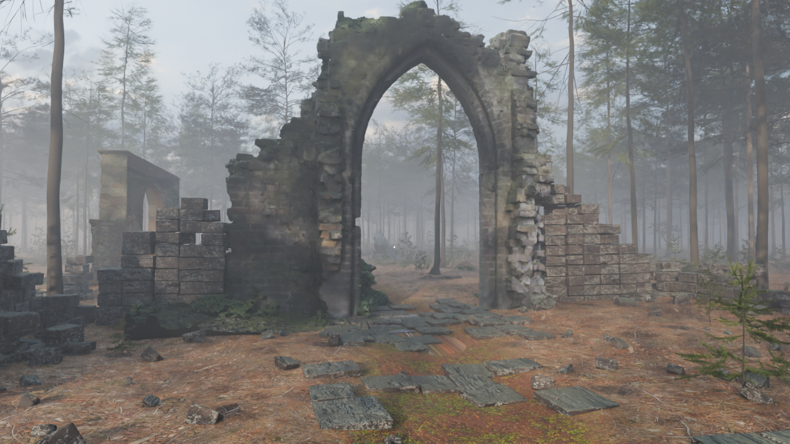
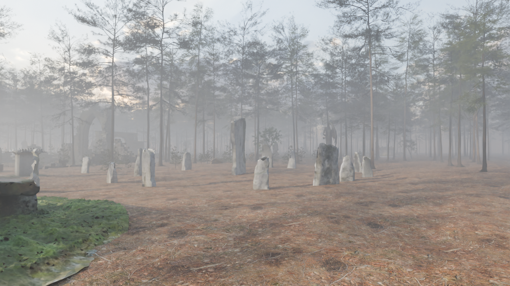
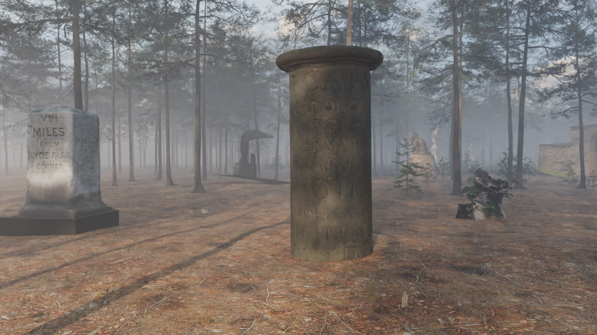
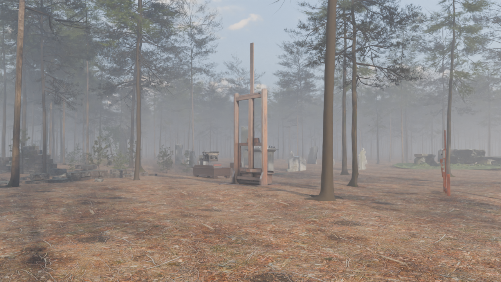
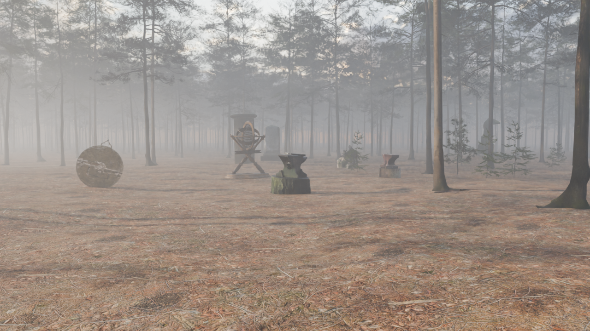

Each category is one cluster: my recommended piece in the middle, the other three around it.

Landing: lanterns. First thing off the trail. Hurricane lanterns hang from three old posts and sit on the floor, with the five brass lamps on the tallest arm. Each one is lit; the glow is faint in daylight and will read far more on the site at dusk.

Earlier: wells and mirrors. Left of the trail before the fork: the Venice well, the cheval mirror and the gilded mirror, with the Dinan well behind.

Stories: the ruined chapel. The arch is its west door and spans the main trail. The chapel's walls, built stone by stone, are broken down to stubs, the stones that fell from them lie where they dropped, and worn flagstones from the old floor run through the door. The stone gate and the fortress arch nearby keep the broken-off stubs of the walls they stood in. The broken tower scan is gone: only its front had been captured, with a slab of ground attached, so it couldn't be fixed.

Games: the stone ring. Past the Grim Reaper at the end of the left branch: a Callanish-style ring in a clearing. The chess set is left mid-game on the concrete table, with the mossy stone table beside it.

Work: the milestones. Past the Black Angel at the end of the right branch. The Richmond stone's carved "VIII MILES" reads close up.

Art: easels and a writing desk. The crank easel in the middle, the paint-dripped easel beside it, and the typewriter on the desk.

Tools: anvils and instruments. The anvil on its mossy stump, the old anvil, the armillary sphere and the astrolabe.